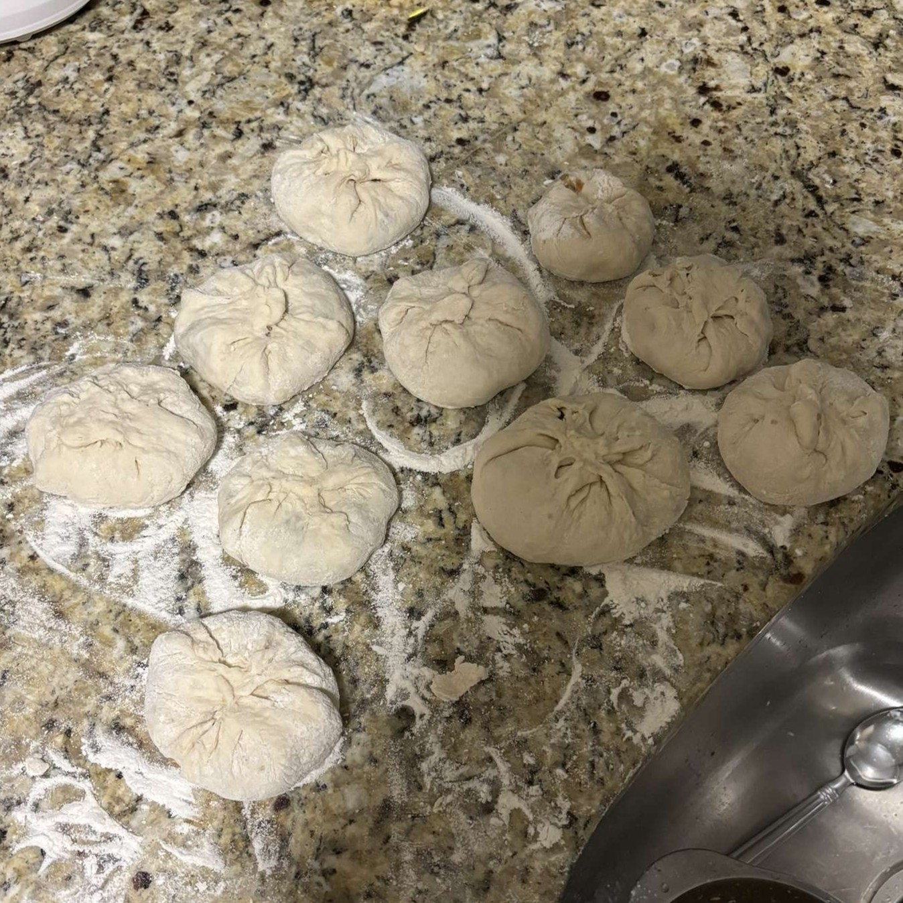

The Bao
Ingredients:
- Self-Raising Flour
- Plain Greek Yogurt
- Mushrooms
- Carrots
- Green Onion
- Ground Chicken
- Soy Sauce
Take every ingredient, except for the ground chicken, yogurt, and flour, and chop them up to a reasonable size for a food processor. Next, place all of the ingredients into a food processor and get them chopped up fully so they look like a brownish clump, a little softer than cookie dough, and place them in a bowl with the ground chicken. Combine all of this together and set aside.
Next, take the flour and yogurt and combine to make the dough. Fold and knead it until it is a proper dough, and break it up into equal pieces. Take the filling and scoop onto the dough pieces and fold the edges up to completely surround the filling and pinch to keep it closed, and place in a hot pan.
The best way I found to cook these was cooking one side for a little, flipping it so that the pinch at the top got baked together and held a better seal, and then go back and forth between those until it was cooked to the desired amount. Before taking off of the pan, you can try to flip them on their sides and give them a little browning if you want, but if not, it is still very much cooked. Finally, take them off of the pan, wait for them to cool off a little bit, and enjoy!